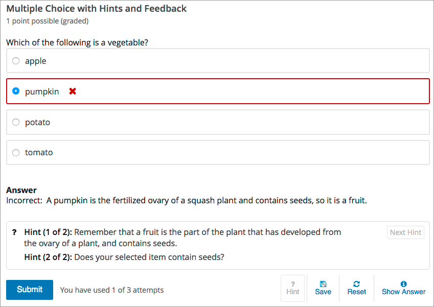
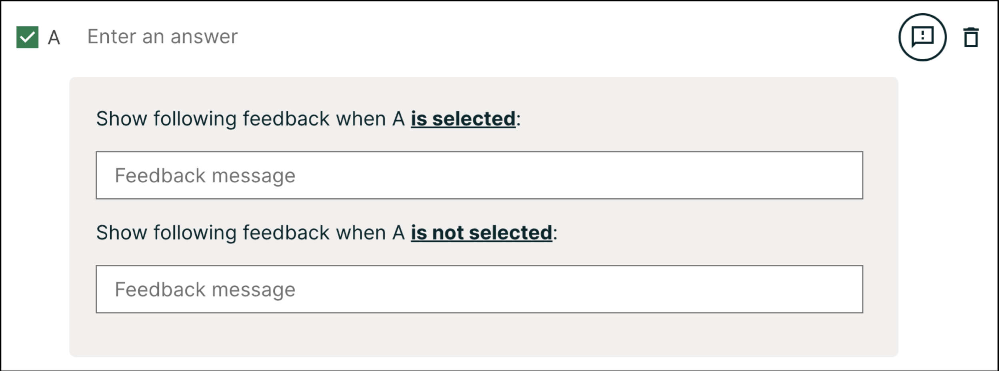
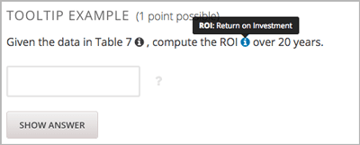

10.4. Problem Components#
The problem component allows you to add interactive exercises to the verticals in your course. You can add many different types of exercises and problems. This section covers the basics of problem components: what they look like to you and your learners, and the options that every problem component has.
10.4.1. Problem Component Overview#
The format for edX problems is based on the LON-CAPA XML format, although the two are not quite compatible. In the edX variant, problems are composed of the following types of tags.
inputtypesare similar to XBlocks. They define ways for users to enter input into the problem.responsetypesare graders. They define how inputs are mapped to grades.hintersare used to provide feedback to problems.Standard HTML tags are used for formatting.
OLX is designed to allow mixing and matching of inputtypes,
responsetypes, and hinters. For example, a numerical grader could match
7+-0.1%. Ideally, you could use this grader with any inputtype that returns
numbers as its output, including a text box, equation input, slider, or
multiple choice question. In practice, this does not always work. For example,
in the example described above, a multiple choice question would not give an
output in a format a numerical grader could handle.
In addition, in many cases, there is a 1:1 mapping between graders and inputs. For some types of inputs (especially discipline-specific specialized ones), only one grader is needed.
The most general grader is customresponse. This grader uses Python code to
evaluate the input. By design, this ought to work with any inputtype, although
there are bugs mixing this with a small number of the newer inputtypes.
Like LON-CAPA, OLX allows embedding of code to generate parameterized problems. Unlike LON-CAPA, edX supports Python (and not Perl). Otherwise, the syntax for parameterizing problems is approximately identical.
10.4.1.1. Creating Graded or Ungraded Problems#
All problems receive a point score. However, when you establish the grading policy for your course, you specify the assignment types that will count toward learners’ grades; for example, homework, lab, midterm, and final.
As you develop your course, you can add problem components to the units in any subsection. The problem components that you add automatically inherit the assignment type that is defined at the subsection level. You can only set assignment types at the subsection level, not at the unit or individual component level.
For more information, see Grading Policy.
10.4.2. The Learner View of a Problem#
All problems on the edX platform have these component parts, some of which can be configured. For configurable options, you can specify whether and when an option is available in problems.

Problem text. The problem text can contain any standard HTML formatting.
Within the problem text for each problem component, you must identify a question or prompt, which is, specifically, the question that learners need to answer. This question or prompt also serves as the required accessible label, and is used by screen readers, reports, and Insights. For more information about identifying the question text in your problem, see The Simple Editor.
Response field. Learners enter answers in response fields. The appearance of the response field depends on the type of the problem.
Rendered answer. For some problem types, the LMS uses MathJax to render plain text as “beautiful math.”
Submit. When a learner selects Submit to submit a response for a problem, the LMS saves the grade and current state of the problem. The LMS immediately provides feedback about whether the response is correct or incorrect, as well as the problem score. The Submit option remains available if the learner has unused attempts remaining, so that they can try to answer the problem again.
Note
If you want to temporarily or permanently hide learners’ results for problems inside of a subsection, see Set Problem Results Visibility.
Attempts. You can set a specific number of attempts or allow unlimited attempts for a problem. By default, the course-wide Maximum Attempts advanced setting is null, meaning that the maximum number of attempts for problems is unlimited.
In courses where a specific number has been specified for Maximum Attempts in Advanced Settings, if you do not specify a value for Maximum Attempts for an individual problem, the number of attempts for that problem defaults to the number of attempts defined in Advanced Settings.
Save. The learner can select Save to save their current response without submitting it for grading. This allows the learner to stop working on a problem and come back to it later.
Reset. You can specify whether the Reset option is available for a problem. This setting at the problem level overrides the default setting for the course in Advanced Settings.
If the Reset option is available, learners can select Reset to clear any input that has not yet been submitted, and try again to answer the question.
If the learner has already submitted an answer, selecting Reset clears the submission and, if the problem includes a Python script to randomize variables and the randomization setting is On Reset, changes the values the learner sees in the problem.
If the problem has already been answered correctly, Reset is not available.
If the number of Maximum Attempts that was set for this problem has been reached, Reset is not available.
Show Answer. You can specify whether this option is available for a problem. If a learner selects Show Answer, the learner sees both the correct answer and the explanation, if any.
If you specify a number in Show Answer: After Some Number of Attempts, the learner must submit at least that number of attempted answers before the Show Answer option is available for the problem.
Feedback. After a learner selects Submit, an icon appears beside each response field or selection within a problem. A green check mark indicates that the response was correct, a green asterisk (*) indicates that the response was partially correct, and a red X indicates that the response was incorrect. Underneath the problem, feedback text indicates whether the problem was answered correctly, incorrectly, or partially correctly, and shows the problem score.

Note
If you want to temporarily or permanently hide learners’ results for problems inside of a subsection, see Set Problem Results Visibility.
In addition to the items above, which are shown in the example, problems also have the following elements.
Correct answer. Most problems require that you specify a single correct answer.
Explanation. You can include an explanation that appears when a learner selects Show Answer.
Grading. You can specify whether a group of problems is graded.
Due date. The date that the problem is due. Learners cannot submit answers for problems whose due dates have passed, although they can select Show Answer to show the correct answer and the explanation, if any.
Note
Problems can be open or closed. Closed problems, such as problems whose due dates are in the past, do not accept further responses and cannot be reset. Learners can still see questions, solutions, and revealed explanations, but they cannot submit responses or reset problems.
There are also some attributes of problems that are not immediately visible. You can set these attributes in Studio.
Accessible Label. Within the problem text, you can identify the text that is, specifically, the question that learners need to answer. The text that is labeled as the question is used by screen readers, reports, and Insights. For more information, see The Simple Editor.
Randomization. In certain types of problems, you can include a Python script to randomize the values that are presented to learners. You use this setting to define when values are randomized. For more information, see Randomization.
10.4.3. Problem Settings#
In addition to the text of the problem, problems that you create have the following settings.
This section describes the OLX elements and attributes that you define for the problem settings. For a detailed description of each setting, see Defining Settings for Problem Components.
10.4.3.1. Display Name#
Using OLX, you set the display name as an attribute of the <problem>
element.
<problem display_name="Geography Homework"></problem>
10.4.3.2. Maximum Attempts#
Using OLX, you set the maximum attempts as an attribute of the <problem>
element.
<problem max_attempts="3"></problem>
10.4.3.3. Problem Weight#
Using OLX, you set the component weight as an attribute of the <problem>
element.
<problem weight="2.0"></problem>
10.4.3.4. Randomization#
Using OLX, you set value randomization as an attribute of the <problem>
element.
<problem rerandomize="always"></problem>
You can specify the following values for this attribute.
always
on_reset
never
per_student
10.4.3.5. Show Answer#
Using OLX, you set the show answer preference as an attribute of the
<problem> element.
<problem showanswer="correct_or_past_due"></problem>
You can specify the following values for this attribute.
always
answered
attempted
closed
correct_or_past_due
finished
past_due
never
10.4.4. Modifying a Released Problem#
Warning
Be careful when you modify problems after they have been released! Changes that you make to published problems can affect the learner experience in the course and analysis of course data.
After a learner submits a response to a problem, the LMS stores the learner’s response, the score that the learner received, and the maximum score for the problem. For problems with a Maximum Attempts setting greater than 1, the LMS updates these values each time the learner submits a new response to a problem. However, if you change a problem or its attributes, existing learner information for that problem is not automatically updated.
For example, you might release a problem and specify that its answer is 3. After some learners have submitted responses, you notice that the answer should be 2 instead of 3. When you update the problem with the correct answer, the LMS does not update scores for learners who answered 2 for the original problem and thus received the wrong score.
For another example, you might change the number of response fields to three. Learners who submitted answers before the change have a score of 0, 1, or 2 out of 2.0 for that problem. Learners who submitted answers after the change have scores of 0, 1, 2, or 3 out of 3.0 for the same problem.
If you change the weight setting for the problem in Studio, however, existing learner scores update when the learner’s Progress page is refreshed. In a live section, learners will see the effect of these changes.
10.4.4.1. Workarounds#
If you have to modify a released problem in a way that affects grading, you have two options within Studio to assure that every learner has the opportunity to submit a new response and be regraded. Note that both options require you to ask your learners to go back and resubmit answers to a problem.
In the problem component that you changed, increase the number of attempts for the problem. Then ask all your learners to redo the problem.
Delete the entire Problem component in Studio and create a new Problem component with the content and settings that you want. (If the revisions you must make are minor, duplicate the problem component before you delete it and revise the copy.) Then ask all your learners to complete the new problem.
10.4.5. Multiple Problems in One Component#
You can create a problem that includes more than one response type. For
example, you might want to create a numerical input problem and then include a
multiple choice problem that refers to the numerical input problem. Or,
you might want a learner to be able to check the answers to many problems at
one time. To do this, you can include multiple problems inside a single
<problem> element. The problems can be different types.
Each question and its answer options are enclosed by the element that
identifies the type of problem, such as <multiplechoiceresponse> for a
multiple choice question or <formularesponse> for a math expression input
question.
You can provide a different explanation for each question by using the
<solution> element.
As a best practice, edX recommends that you avoid including unformatted paragraph text between the questions. Screen readers can skip over text that is inserted among multiple questions.
Elements such as the Submit, Show Answer, and Reset buttons, as well as the settings that you select for the problem component, apply to all of the problems in that component. Thus, if you set the maximum number of attempts to 3, the learner has three attempts to answer the entire set of problems in the component as a whole rather than three attempts to answer each problem individually. If a learner selects Submit, the LMS scores all of the problems in the component at once. If a learner selects Show Answer, the answers for all the problems in the component appear.
Note
You cannot use a Custom JavaScript Display and Grading Problem in a component that contains more than one problem. Each custom JavaScript problem must be in its own component.
10.4.5.1. Adding Feedback and Hints to a Problem#
You can add feedback, hints, or both to the simple problem types.
By using hints and feedback, you can provide learners with guidance and help as they work on problems.
10.4.5.1.1. Feedback in Response to Attempted Answers#
You can add feedback that displays to learners after they submit an answer.
For example, the following single select problem provides feedback in response to the selected option when the learner selects Submit. In this case, feedback is given for an incorrect answer.

10.4.5.1.2. Best Practices for Providing Feedback#
The immediacy of the feedback available to learners is a key advantage of online instruction and difficult to do in a traditional classroom environment.
You can target feedback for common incorrect answers to the misconceptions that are common for the level of the learner (for example, elementary, middle, high school, college).
In addition, you can create feedback that provides some guidance to the learner about how to arrive at the correct answer. This is especially important in text input and numeric input problems, because without such guidance, learners might not be able to proceed.
You should also include feedback for the correct answer to reinforce why the answer is correct. Especially in questions where learners are able to guess, such as single select and dropdown problems, the feedback should provide a reason why the selection is correct.
10.4.5.1.3. Providing Hints for Problems#
You can add one or more hints that are displayed to learners. When you add hints, the Hint button is automatically displayed to learners. Learners can access the hints by selecting Hint beneath the problem. A learner can view multiple hints by selecting Hint multiple times.
For example, in the following single select problem, the learner selects Hint after having made one incorrect attempt.

The hint text indicates that it is the first of two hints. After the learner selects Next Hint, both of the available hints appear. When all hints have been used, the Hint or Next Hint option is no longer available.
{kind=link}
10.4.5.1.4. Best Practices for Providing Hints#
To ensure that your hints can assist learners with varying backgrounds and levels of understanding, you should provide multiple hints with different levels of detail.
For example, the first hint can orient the learner to the problem and help those struggling to better understand what is being asked.
The second hint can then take the learner further towards the answer.
In problems that are not graded, the third and final hint can explain the solution for learners who are still confused.
10.4.5.1.5. Create Problems with Feedback and Hints#
While editing a problem block, you can apply Answer-specific feedback for all problem types. Group feedback can only be applied to multi-select problems.
Any number of hints can be added for all simple problem types.
10.4.5.1.6. Adding Answer-specific Feedback#
Answer-specific feedback can be added under each answer by pressing the feedback icon to the right of the answer text. Feedback entered in these fields are given when the learner selects that answer or when the learner does not select that answer.
{kind=link}
Note
The “is not selected” feedback field shown above is only available for the multi-select problem type.
10.4.5.1.7. Adding Group Feedback for Multi-Select Problems#
This setting can be found on the collapsible settings to the right of the problem editor. Feedback entered in this field will display if and only if the learner selects all of the checked answers. Click the Add group feedback button to add additional feedback for different groups of checked answers. Group feedback can only be applied for the multi-select problem type.

10.4.5.1.8. Adding Hints#
This setting can be found on the collapsible settings to the right of the problem editor. Click the Add hint button to add additional hints for learners.

10.4.5.2. Awarding Partial Credit for a Problem#
You can configure the following problem types so that learners can receive partial credit for a problem if they submit an answer that is partly correct.
By awarding partial credit for problems, you can motivate learners who have mastered some of the course content and provide a score that accurately demonstrates their progress.
For more information about configuring partial credit, see the topic for each problem type.
10.4.5.2.1. How Learners Receive Partial Credit#
Learners receive partial credit when they submit an answer in the LMS.
In the following example, the course team configured a single select problem to award 25% of the possible points (instead of 0 points) for one of the incorrect answer options. The learner selected this incorrect option, and received 25% of the possible points.

10.4.5.2.2. Partial Credit and Reporting on Learner Performance#
When a learner receives partial credit for a problem, the LMS only adds the points that the learner earned to the grade. However, the LMS reports any problem for which a learner receives credit, in full or in part, as correct in the following ways.
Events that the system generates when learners receive partial credit for a problem indicate that the answer was correct. Specifically, the
correctnessfield has a value ofcorrect.For more information about events, see Problem Interaction Events in the EdX Research Guide.
The AnswerValue in the Student Answer Distribution report is 1, for correct.
The edX Insights insights:student performance reports count the answer as correct.
Course teams can see that a learner received partial credit for a problem in
the learner’s submission history. The submission history shows the score that
the learner received out of the total available score, and the value in the
correctness field is partially-correct. For more information, see
Learner Answer Submissions.
10.4.6. Problem Randomization#
Presenting different learners with different problems or with different versions of the same problem is referred to as “problem randomization”.
You can provide different learners with different problems by using randomized content blocks, which randomly draw problems from pools of problems stored in content libraries. For more information, see Randomized Content Blocks.
Note
Problem randomization is different from the Randomization setting in Studio. Problem randomization offers different problems or problem versions to different learners, whereas the Randomization setting controls when a Python script randomizes the variables within a single problem. For more information about the Randomization setting, see Randomization.
10.4.6.1. Create Randomized Problems#
Note
Creating randomized problems by exporting your course and editing some of your course’s XML files is no longer supported.
You can provide different learners with different problems by using randomized content blocks, which randomly draw problems from pools of problems stored in content libraries. For more information, see Randomized Content Blocks.
10.4.6.2. Adding Tooltips to a Problem#
To help learners understand terminology or other aspects of a problem, you can add inline tooltips. Tooltips show text to learners when they move their cursors over a tooltip icon.
The following example problem includes two tooltips. The tooltip that provides a definition for “ROI” is being shown.
{kind=link}
Note
For learners using a screen reader, the tooltip expands to make its associated text accessible when the screen reader focuses on the tooltip icon.
To add the tooltip, you wrap the text that you want to appear as the tooltip in
the clarification element. For example, the following problem contains two
tooltips.
<problem>
<text>
<p>Given the data in Table 7 <clarification>Table 7: "Example PV
Installation Costs", Page 171 of Roberts textbook</clarification>,
compute the ROI <clarification><strong>ROI</strong>: Return on
Investment</clarification> over 20 years.
</p>
. . .